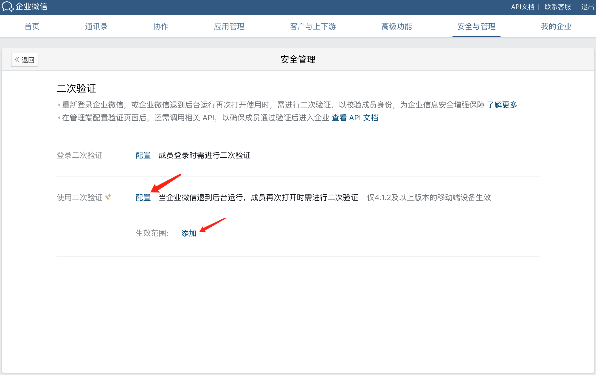
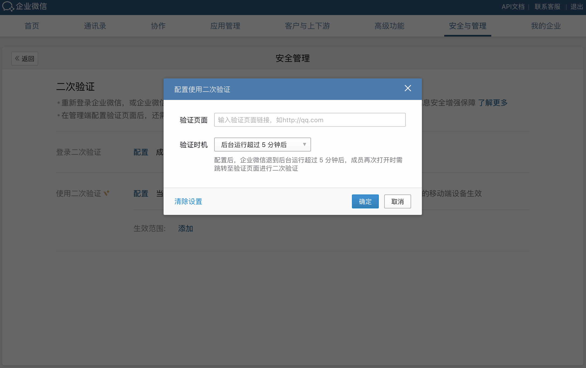

概述
最后更新：2024/08/12
重新登录企业微信，或企业微信退到后台运行再次打开使用时，企业可以要求成员进行二次验证，以校验成员身份，为企业信息安全增强保障。目前支持两种场景的二次验证：登录二次验证和使用二次验证。开启二次验证的方法如下
登录二次验证
管理员需要先在管理端配置登录二次验证的验证页面、验证时机。
使用二次验证
管理员需要先在管理端配置使用二次验证的验证页面、验证时机。

当成员触发了二次验证时，会自动跳转到企业配置的验证页面，并且会带上如下参数：code=CODE。拿到code之后企业可以通过获取用户二次验证信息接口获取到需要验证成员的userid和tfa_code，待验证用户身份信息无误后，再调用通过二次验证让成员进入企业或者正常使用。